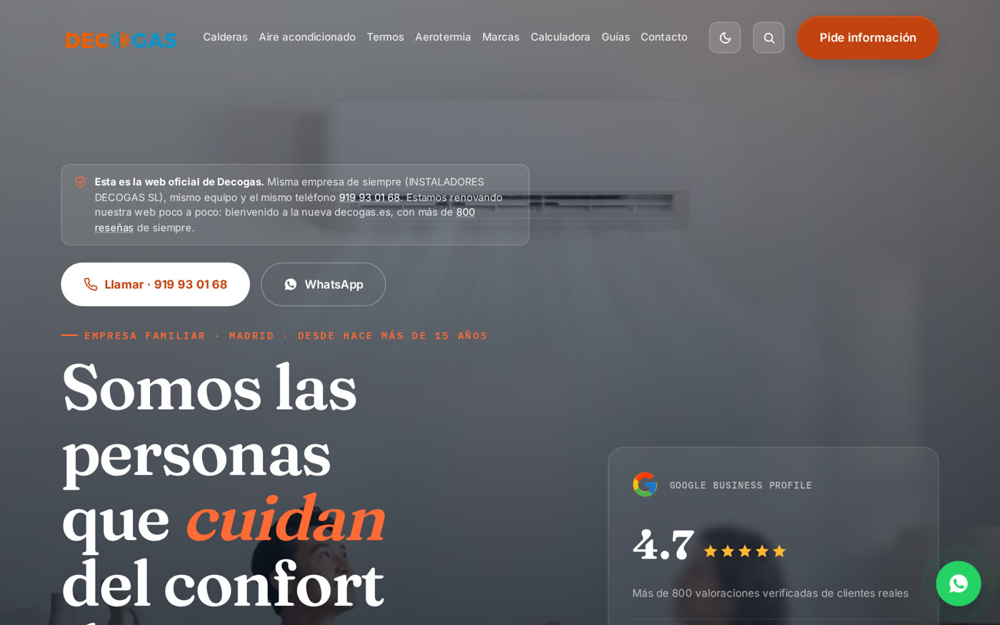
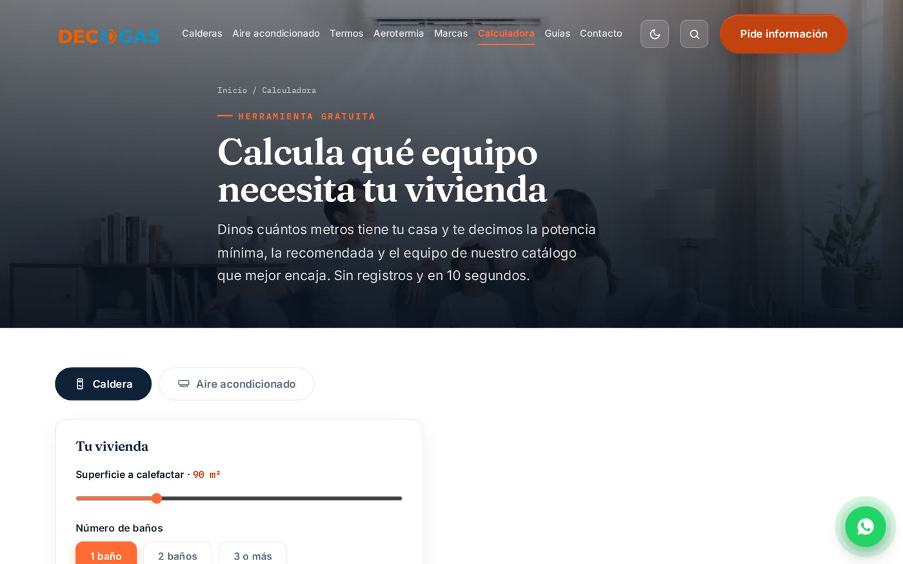

Decogas · web en producción
decogas.es
La web de una empresa instaladora de calderas y aire acondicionado de Madrid, rehecha desde cero y en producción.
- Catálogo y contactos de clientes sobre Supabase, con panel de administración y seguridad por filas (RLS).
- Rescate de la tienda antigua (WordPress): 258 productos y 265 fotos migrados; 177 artículos del blog con 542 imágenes pasadas a WebP.
- Calculadora que recomienda el equipo según la vivienda y envía el presupuesto por WhatsApp o PDF.
- SEO técnico con datos estructurados (JSON-LD) y analítica propia para medir visitas y llamadas.
- Cada cambio se publica solo con GitHub Actions.
AstroJavaScriptSupabaseSEOGitHub Actions

